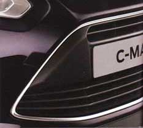
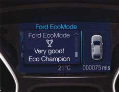

| Air conditioning | Electrically-operated front and rear windows | Lower front grille with chrome surround |
| (Standard) | (Front - standard; Rear - standard on Grand, option as part of pack on C-MAX) |
(Standard) |
|  | ||
| Body colour door handles | Ford Easy-Fuel capless refuelling system | Eco Mode |
| (Standard) | (Standard) | (Standard) |
|  |